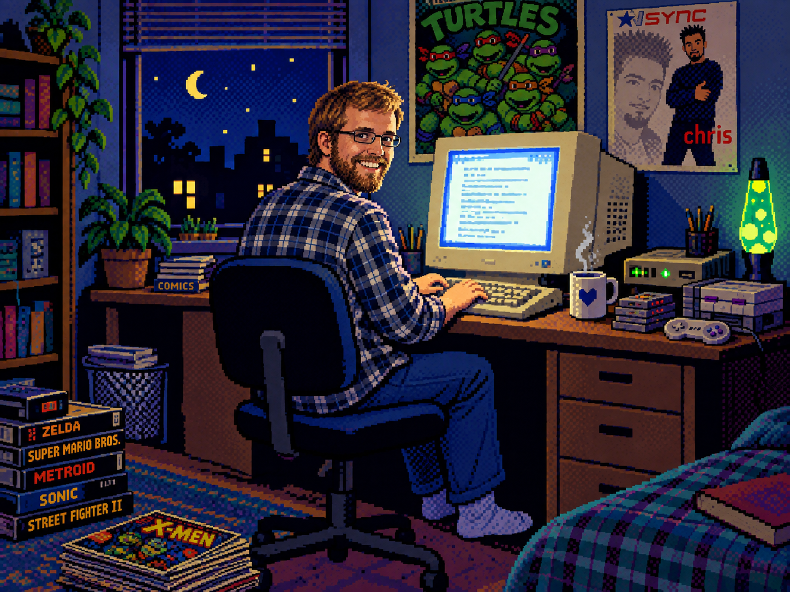

HELLO. I'M MIKE.
Most copywriter websites sound like most copywriter websites.
This one tries not to.
I've spent almost twenty years writing for a living. For non-profits and national food brands. For private banks and universities. And for a bunch of people and businesses in between.
What I do differently from most writers is find the specific thing that makes a business different, and say it in a way people actually remember.
If your website or product's copy could belong to any of your competitors, it probably does. That's the problem I fix.
LET'S FIX IT →
HERE'S WHAT'S ACTUALLY HAPPENING TO YOUR COPY
You know your business is different. You can feel it. The way you talk about it over coffee, the way you describe it to a friend who asks what you do—there's a specific personality in there, and it's the reason people choose you over the competition.
Then it hits the website, and somehow it comes out sounding like every other business in your industry.
That's not a you problem. That's a writing problem. Most copy gets written the same way it's always been written: pull the same words and phrases from the same bucket, smooth out anything interesting or different, end up with something technically correct and totally forgettable. AI hasn't helped—it's made the bucket bigger and the words smoother. And it's jacked up the forgettability a few levels.
What's missing is somebody whose actual job is to listen to how you talk about your business, find the parts that make it sound like yours, and put those parts on the page in a way that doesn't bury your voice.
That's what I do.
PREVIOUSLY WRITTEN FOR
Otis Spunkmeyer · Lamb Weston · Borden · Kerry Beverages · McDonald's · The Good Samaritan Society · Passenger Productions · Dordt University · First Dakota National Bank
And a long list of private businesses that needed their copy to sound like them instead of like everyone else.
See services and pricing →A LITTLE ABOUT HOW THIS WORKS
I'm a one-person operation. That means you're not getting an account manager, a project coordinator, and a writer you've never met. You're getting me, from the first email through the final draft.
It also means I work the way most busy people actually want to work—over email, on your timeline, without a lot of meetings. You send me a clear brief, I respond evenings and weekends, and the writing shows up in your inbox when it's ready.
If you've ever wished a creative partner would just do the work and send it to you, this is everything you've been dreaming of.
Read the full process →A QUICK WORD ON AI
Yes, AI can write copy. It can produce competent, professional, completely indistinguishable-from-everyone-else's copy in about thirty seconds. If that's what you're after, you genuinely don't need me—and I'm not being sarcastic.
But if you want writing that sounds like your business has a personality worth paying attention to, well, that's a different thing entirely. And that's what I'm passionate about.